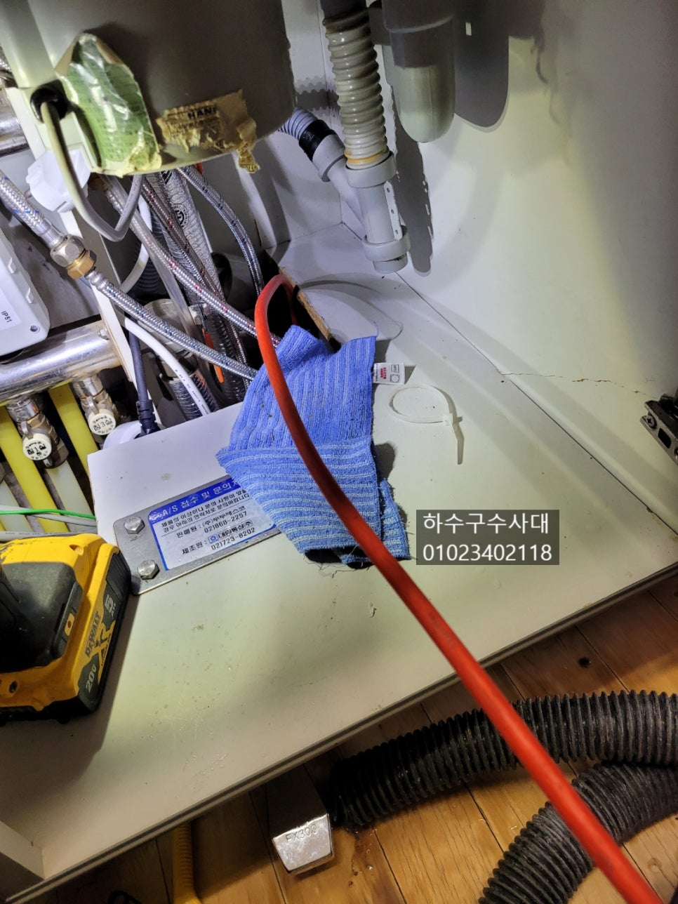
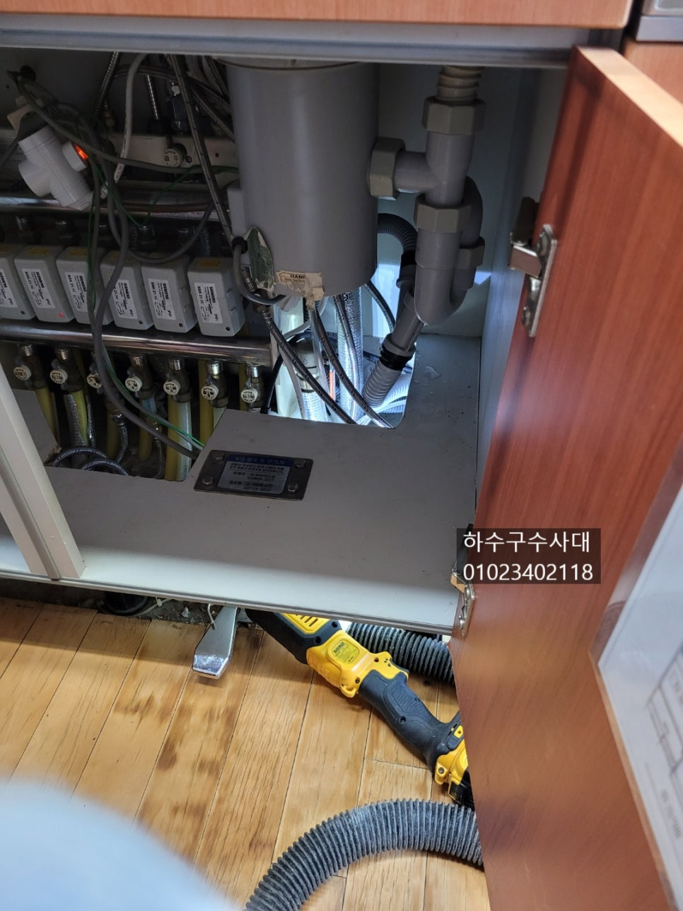
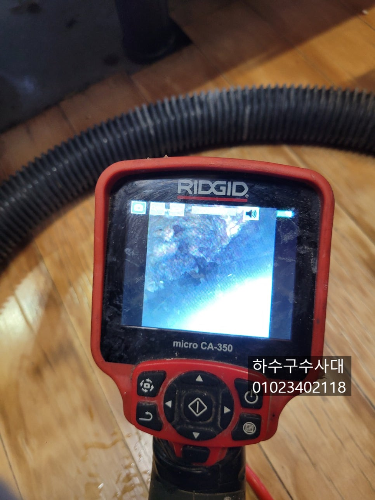
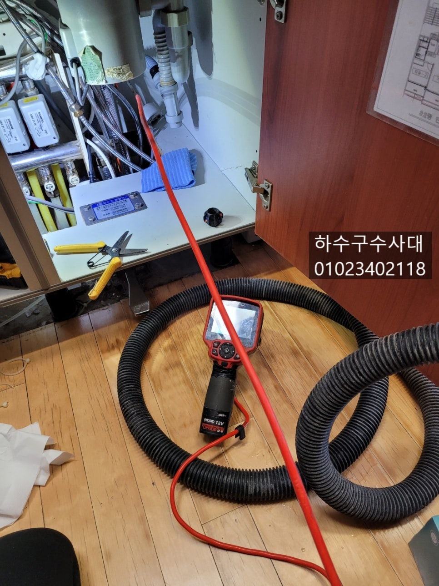
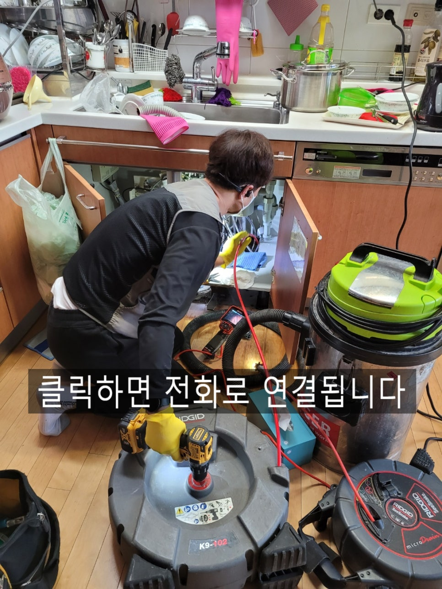
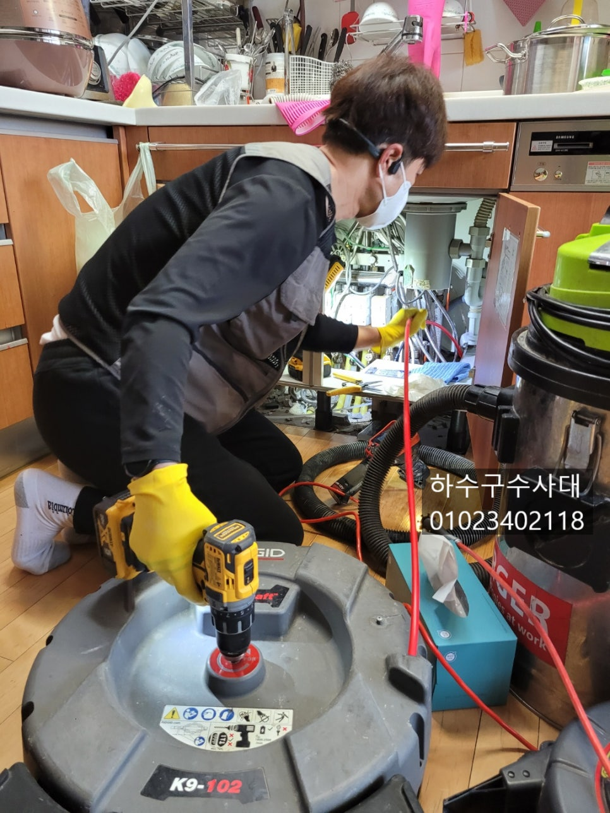
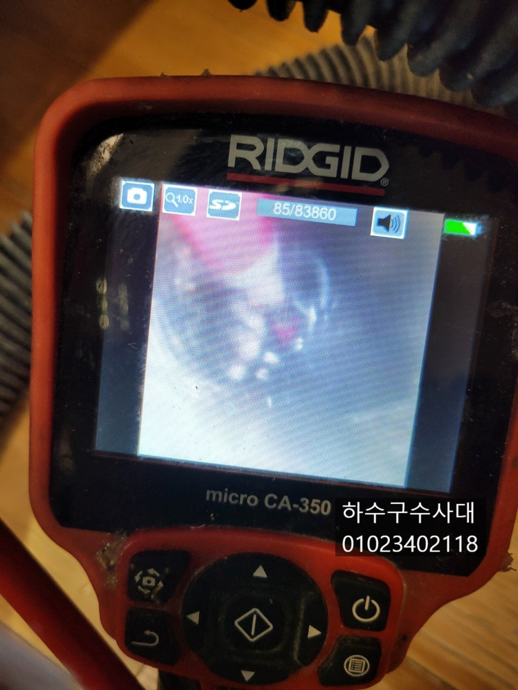

🏠 장안구하수구막힘 송죽동 조원동 싱크대뚫기
용인 원동 싱크대막힘 전문 시공 후기

📋 작업 개요
- 위치: 용인 원동, 원동, 용인
- 서비스 유형: 싱크대막힘, 하수구막힘, 배관막힘, 누수수리, 역류해결, 뚫는업체, 배관청소, 고압세척
- 작업 일시: 2022. 3. 8. 22:25
- 업체명: 하수구수사대 (010-5615-2118)
🔍 문제 상황
장안구하수구막힘 송죽동 조원동 싱크대뚫기
안녕하세요
"하수구수사대"입니다.
오늘은 싱크대하수구막힘 연락을 받고
장안구로 출동하였어요.
장안구싱크대하수구막힘 현장을 포스팅하겠습니다.
우선 증상은 물을 조금씩 쓸때는 괜찮은데
물양이 많아지면 하수구에서 물이 넘쳐 새어나오고
있었어요. 이렇게 싱크대 밑은 눈으로 보이지않아
물이 넘쳐도 모르고 지나가는 일이 많답니다.
하지만 지속적으로 물이 넘치게 되면 밑에집으로
누수가 생겨 더 큰일이 일어날수 있기때문에
넘친걸 알았다면 하루빨리 뚫어야 한답니다.
내시경카메라로 배관 내부를 확인해 보니 배관위쪽에
기름 덩어리들이 붙어있는것을 확인 할수 있었는데요
이러게 기름덩어리들이 두껍게 쌓이면 일부분이 무너지면서

🔎 원인 분석
💡 전문가 진단: 하수구수사대010-2340-2118
하수구가 막히게 된답니다.
또는 동맥경화처럼 배관의 절반이 기름이라면
많은 양의 물이 통과하지 못하고 역류하게 됩니다.
배관을 뚫는 방식은 몇가지가 있는데요
가장 좋은 방식은 배관청소를 해주는것이 좋습니다.
배관청소는 배관내부에 붙어있는 기름덩어리를 모두 제거하는
작업으로 배관을 새것처럼 청소를 하기때문에
관리만 잘해서 쓴다면 앞으로 막힐일은 없답니다.
업체마다 사용하는 장비가 다르지만
"하수구수사대"는 최신장비와 모든 하수구에 최적화 되어있는
장비를 사용함으로서 원인부터 해결 그리고 철저한 AS로
1년동안 보증해 드리고 있습니다.
하수구수사대
010-2340-2118
싱크대하수구는 설거지를 하면서 기름기가 흘러들어가는데
이게 조금씩 조금씩 쌓이다보면 덩어리처럼 딱딱하게
굳어버리기 때문에 관리가 중요하답니다.

🔧 작업 과정
배관을 세척하고 나면 배관의 기울기와 구조를 확인을 하는데요
구조와 기울기를 참고하여 관리를 해주시면 더욱더
막히는 일이 없습니다.
기울기가 좋지않으면 배관에 물이 고여있게되고
기름성분이 고여있는 물이 떠서 배관옆부분 부터 붙게
됩니다. 2주 또는 한달에 한번쯤은 펑크린을
자기전에 부어주면 조금씩 붙어있는 기름기를 녹여주는데
효과를 보실수 있답니다.
흔히들 알고 계시는 스프링장비로는 배관을 청소하기는
힘든데요 이유는 스프링을 배관 밑바닥으로 지나가고
배관에 붙어있는 기름덩어리는 윗부분에 위치하고 있기
때문입니다. 스프링을 아무리 많이 넣어도 윗부분을
건드릴수가 없기 때문에 스프링은 그냥 뚫어주는 효과만
보실수 있답니다.
"하수구수사대"는 플렉스샤프트 라는 전문장비를
사용하고 있어 장비앞에 체인이 회전을하면서
배관에 있는 기름기를 모두 제거할수가 있습니다.
내시경카메라로 꼼꼼하게 배관에 붙어있는
기름덩어리를 모두 제거하고 깨끗해진
배관을 눈으로 확인할수 있습니다.
작업을 마치게 되면 싱크대위에 물을 많이
받아서 내려주는 테스트를 해주는것은 필수입니다.
물이 내려가는동안 싱크대호스 주변이나
이음부분에서 물이 새지는 않는지 꼼꼼하게
확인을하고 작업을 마무리 하였습니다.
싱크대하수구막힘 증상은 언제 일어날지 모르니


✅ 작업 완료
물내려가는게 시원하지 않다면 한번쯤은
하수구쪽을 점검해보시길 추천드려요.
혹은 물을 많이 받아서 내려주는 테스트를
해보는것도 좋답니다^^
"하수구수사대"는 수도권전지역
출동가능하니 하수구막힘으로 고민중이시라면
언제든지 연락주세요^^




⚠️ 베란다 누수 및 방수 관리 방법
- ✅ 비가 많이 올 때 창틀 주변이나 아래층 천장에 얼룩이 생기는지 정기적으로 확인해 보세요.
- ✅ 우수관 주변 실리콘 마감이 들뜨거나 깨진 틈새가 있는지 손상 여부를 수시로 체크하세요.
- ✅ 베란다 바닥 타일의 줄눈(메지)이 소실되면 그 틈으로 물이 침투하여 누수가 유발됩니다.
- ✅ 누수 의심 증상 발견 시 방치하면 아래층 손실이 커지므로 즉시 전문가의 진단을 받으십시오.
💡 핵심 정리
- 확실한 장비 작업(내시경 점검 및 샤프트 스케일링)으로 원인을 뿌리 뽑습니다.
- 작업 후 1년 이내에 동일한 부위 재발 시 100% 무상 A/S 서비스를 보장합니다.
- 서울 · 경기 · 인천 전 지역에 24시간 언제든 긴급 출동할 수 있도록 항시 대기 중입니다.
❓ 자주 묻는 질문 (FAQ)
🚨 용인 원동 싱크대막힘 문제로 고민이신가요?
정확한 원인 진단과 확실한 시공으로 재발 없는 해결을 약속드립니다.
24시간 긴급 출동 | 서울 · 경기 · 인천 전지역 | 1년 내 재발 시 무상 A/S